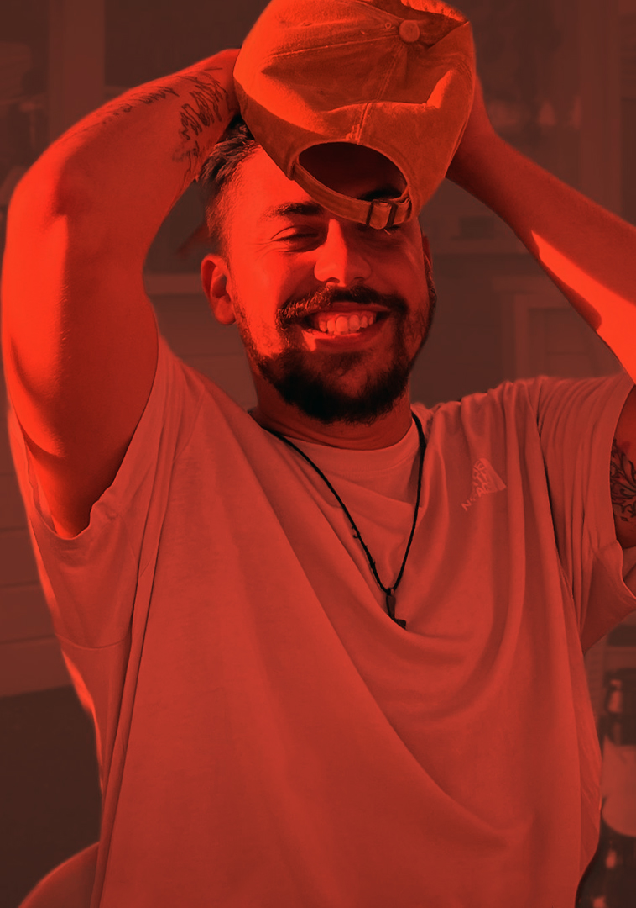
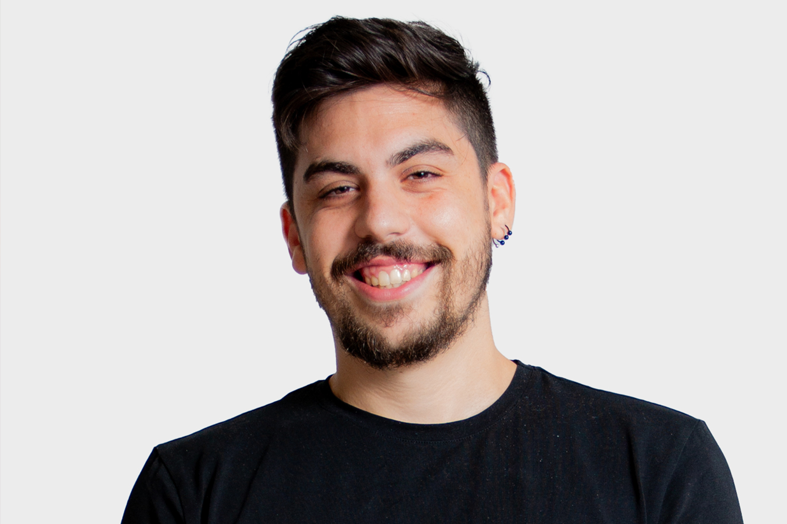
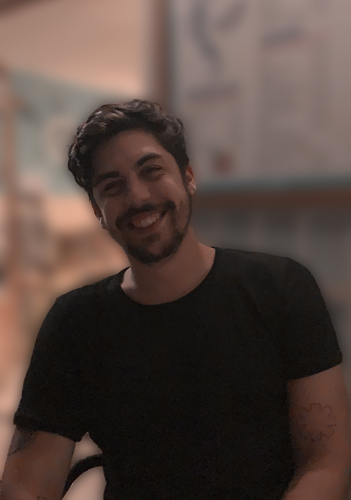
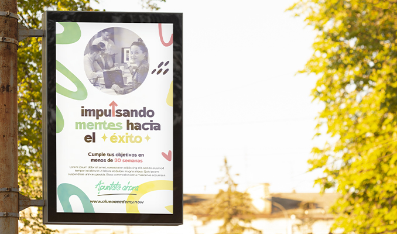
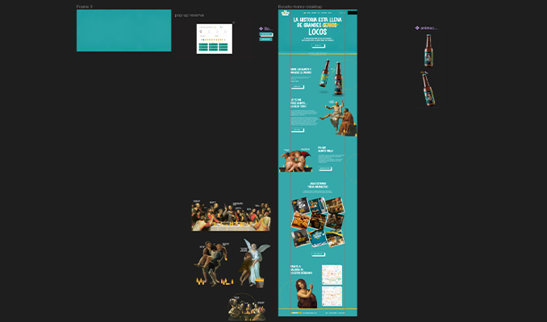
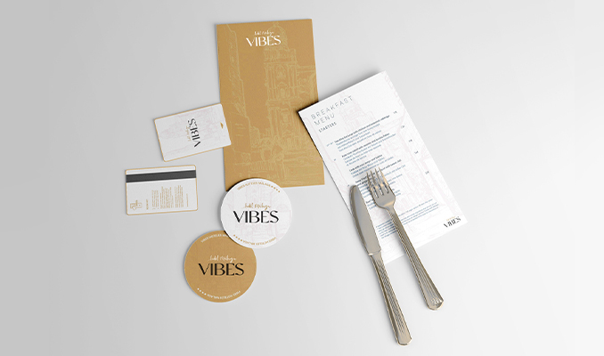

Diseñador gráfico // Diseñador web // Diseñador UX/UI // Maquetador web // Futuro experto en ciberseguridad // y dispuesto a mucho más //
Diseñador gráfico // Diseñador web // Diseñador UX/UI // Maquetador web // Futuro experto en ciberseguridad // y dispuesto a mucho más //
Mis comienzos en el diseño
Comencé estudiando el grado superior de animación 2D, 3D y entornos interactivos en Málaga. 6 años después, No recuerdo nada de 3D.

5
años deexperiencia
+300
proyectos realizados
Desde el minuto uno, he tenido la oportunidad de trabajar con grandes profesionales, los cuales me han formado en maquetación web aprendiendo nuevos lenguajes como html, css, javascript, python...y desarrollando mi verdadera pasión, el diseño, desde sus cimientos. He sido encargado directo de proyectos completos, desde la creación de marca, diseño web y app hasta remarketing y publicidad, siguiendo siempre una metodología scrum, de forma proactiva y resolutiva.
Mi objetivo siempre es ayudar a los clientes a visualizar lo mejor de sus negocios, y con mi trabajo, comunicar visualmente su verdadera esencia. No consiste sólo en diseñar, hay que transmitir un mensaje claro, conciso y diferenciativo. Y definitivamente no tenía una cerveza en la foto, es mi tableta gráfica que siempre llevo conmigo.
Experiencia
Como valores a tener en cuenta, no sólo soy proactivo y resolutivo tras 5 años llevando a cabo proyectos de diferentes índoles, dificultades y sectores. Siempre lo he hecho con ilusión y celeridad, adaptándome a los tiempos previstos de cada proyecto y mininizando posibles cambios negativos mediante argumentos de peso en conversaciones con los clientes.
Descargar CV
Trabajos destacados
01
Diseño gráfico

Teoría del color, conceptualización, creatividad...muchas horas dando forma a las ideas de todos y cada uno de los clientes con los que he trabajado, desarrollando imágenes de marca, dossieres, logotipos, flyers, banners y ads, elementos gráficos para imprenta..estoy listo para todo
02
Diseño web y App

Además de con un diseño atractivo, las páginasy las Apps deben contar con factores imprescindibles como un buen UX, arquitectura del software y diseño adaptable a todo tipo de dispositivos y navegadores. Desde el primer paso hasta el último, diseño teniendo en mente mis conocimientos de maquetación para entregar un producto fiable y pulido, además de facilitar el proceso de maquetación y programación.
03
Imagen corporativa

El último añadido, mi conocimiento más reciente. Desde hace dos años, no sólo diseño logotipos, realizo estudios completos de marca, mediante reuniones, seguimientos e investigación de cada campo, para entregar un producto final completo, construido desde sus cimientos, para poder avanzar como marca con una identidad visual clara, unos mensajes definidos y toda una ristra completa de elementos gráficos listos para abrir un negocio o hacer un lavado de cara integral.
04
Aprendizaje
El diamante en bruto que buscáis. No puedo parar de investigar, de informarme y de avanzar, de conseguir más conocimientos por tontos que sean, de ser el amigo que suelta datos cual enciclopedia, de esos que se te olvidan al día siguiente, pero a mí no. Con este afán, he comenzado a estudiar el master en experto en ciberseguridad (porque por qué no, ¿no?), y estoy dispuesto a aprender de un equipo de diseño que supere con creces mi conocimiento y me haga ilusionarme cada día.
Por último, doy gracias por haber llegado a este punto de mi porfolio, y espero tener una entrevista en la cual desarrollar mejor todas las ideas presentadas, mi trabajo hasta ahora y cualquier duda que pueda surgir antes de unirme a vuestro equipo. ¡Muchas gracias!
Contacto
Dirección
Calle Quilla
Urb. Pueblo Torrequebrada
Benalmádena, Málaga
Urb. Pueblo Torrequebrada
Benalmádena, Málaga
Email
nacarsa@icloud.com